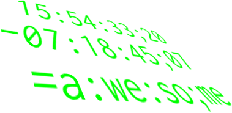
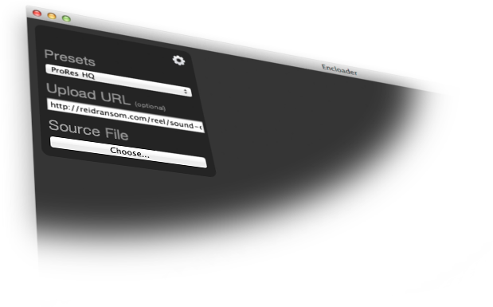

This is a javascript module I developed for manipulating SMPTE timecode.

Encloader is a free and open source application I developed for transcoding and uploading video.
It features the unrivaled x264 codec for creating amazing looking video at low bitrates for the web. It also comes with presets for iOS, ProRes, DNxHD, Animation, and DVD as well.
This is a Bing integration with "The Vampire Diaries", following Kat Graham's day as she prepares for a concert.
This is a spot promoting NCIS: Los Angeles syndication on USA.
This is an interview I cut while on location at the 2013 Sundance Film Festival with the director and cast of Afternoon Delight, winner of the 2013 Sundance Film Festival's Directing Award: U.S. Dramatic.
This is a Walgreens integration with Celebrity Apprentice featuring Arsenio Hall, Alison Sweeney and Magic Johnson.
This is a L'Oreal intergration with the film Filly Brown. It follows the film's star, Gina Rodriguez, to the film's premiere at the Sundance Film Festival.
This is a Windows 8 integration with "Arrow", featuring Colin Donnel.
"Farewell 24"